Mapa Digital
Olhamos, de fora, o que a YM mostra hoje no Instagram, no site ymnegocios.com.br e no Google, e como outras consultorias e agências de Belo Horizonte aparecem nas mesmas buscas. Esta leitura reconhece o que já funciona e aponta possibilidades, para usar conforme os objetivos de vocês.
Usamos o caminho do Método VOS: Ver com clareza, Ordenar o que existe e Sustentar com constância. Em cada etapa, o que já funciona e uma possibilidade.
"Marketing que se sustenta começa pelo terreno" no site, "Descubra o que fazer e em qual ordem" na bio e a Casa do Marketing explicada andar por andar. Possibilidade: fazer o Google mostrar essa clareza também a quem ainda não conhece a YM, na busca pela categoria.
Avaliação gratuita de 4 minutos, três formas de contratar e WhatsApp com o código do país. Possibilidade: alinhar o site e os destaques ao novo produto, o Mapa Digital, que hoje ainda aparece como Raio-X Digital.
106 posts, uma série de Black Friday com post quase diário e quatro clientes contando a experiência em vídeo no site. Possibilidade: levar essa prova para o Google, onde a YM tem 2 avaliações e os concorrentes do mapa, de 60 a 103.
Se um caminho já traz conversão, ele não precisa mudar. A YM tem marca, método, oferta com preço de entrada e constância. Se os clientes de hoje chegam bem por indicação e Instagram, isso é base. O que segue são possibilidades, para usar quando fizerem sentido.
Quem pesquisa o nome encontra a YM bem: o site em primeiro, uma visão geral do Google que resume o trabalho com fidelidade e o Perfil da Empresa com nota 5,0. Na busca por "consultoria de marketing belo horizonte", o quadro de empresas mostra quatro agências com 5 a 103 avaliações, e a YM não apareceu na primeira página da nossa busca. É o ponto com mais espaço, e o perfil já existe para começar.
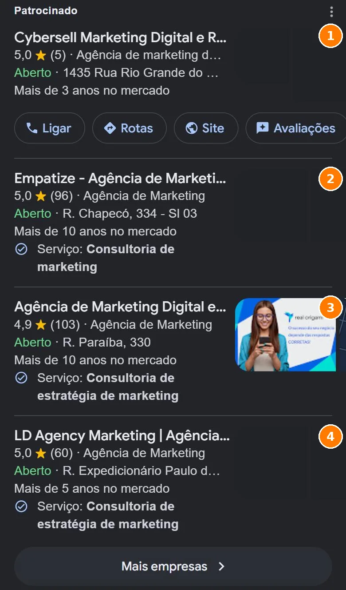
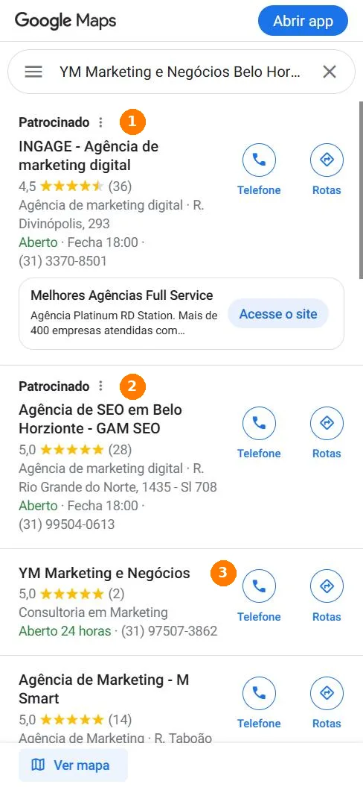
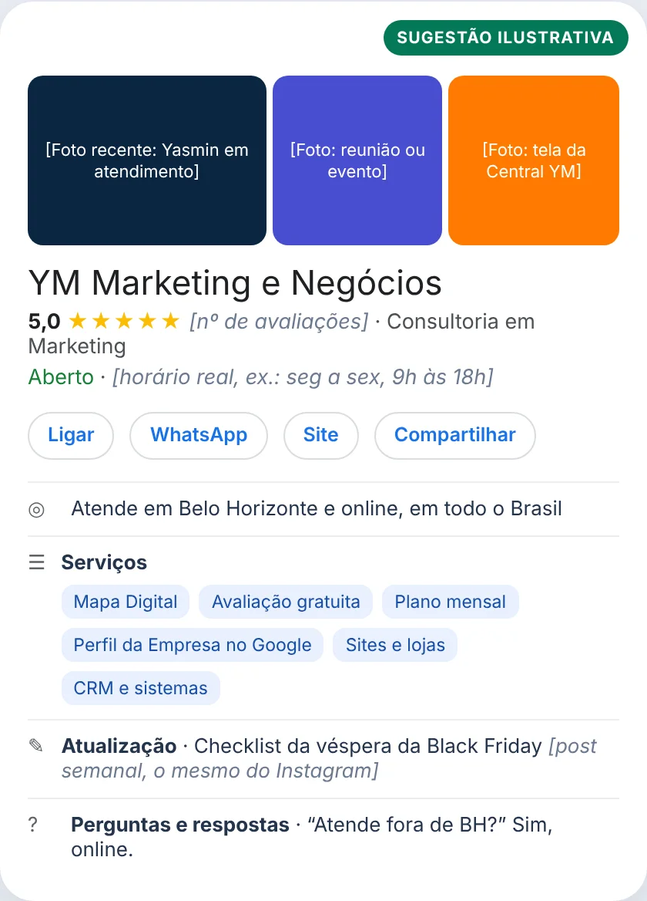
No pedido, o objetivo informado foi testar o fluxo do Mapa Digital, então não partimos de uma meta de negócio. O site fala com sete segmentos e com empresas de portes diferentes, do MEI à empresa acima de R$ 200 mil por mês. Se esse arranjo já traz os clientes certos, ele segue. Se o objetivo for crescer, escolher quem vem primeiro muda a bio, a primeira tela e o que o Google mostra.
Mapa Digital e avaliação gratuita como porta.
Recorrência com acompanhamento.
Sites, lojas, CRM e ERP sob medida.
Leitura qualitativa, baseada no que é público. Só vocês sabem o que já traz resultado.
Antes de mudar qualquer coisa, vale proteger o que já gera confiança.
A Casa do Marketing, do terreno à manutenção, explica o trabalho sem jargão e aparece no site, na bio e nos posts.
Rosto da Yasmin na grade, "você fala diretamente comigo" no site e quase 20 anos de experiência apresentados com números.
Avaliação gratuita de cerca de 4 minutos, logo na primeira tela, e WhatsApp em formato internacional.
Fisioterapia, oráculos, consultoria de RH e outra fundadora contam a experiência no site, com nome e empresa.
Uma série temática de Black Friday, com checklists e datas, mostra planejamento editorial na prática.
Título e descrição do site aparecem certos no Google, as 25 imagens da página inicial têm texto alternativo e há medição de visitas com aviso de cookies.
À esquerda, como está hoje (print real, de 26/11/2026). À direita, uma possibilidade ilustrativa na identidade da YM. É um exemplo de caminho, não a arte final.
Nome com a categoria, três linhas de promessa, link para o site, selo de verificação e cinco destaques.
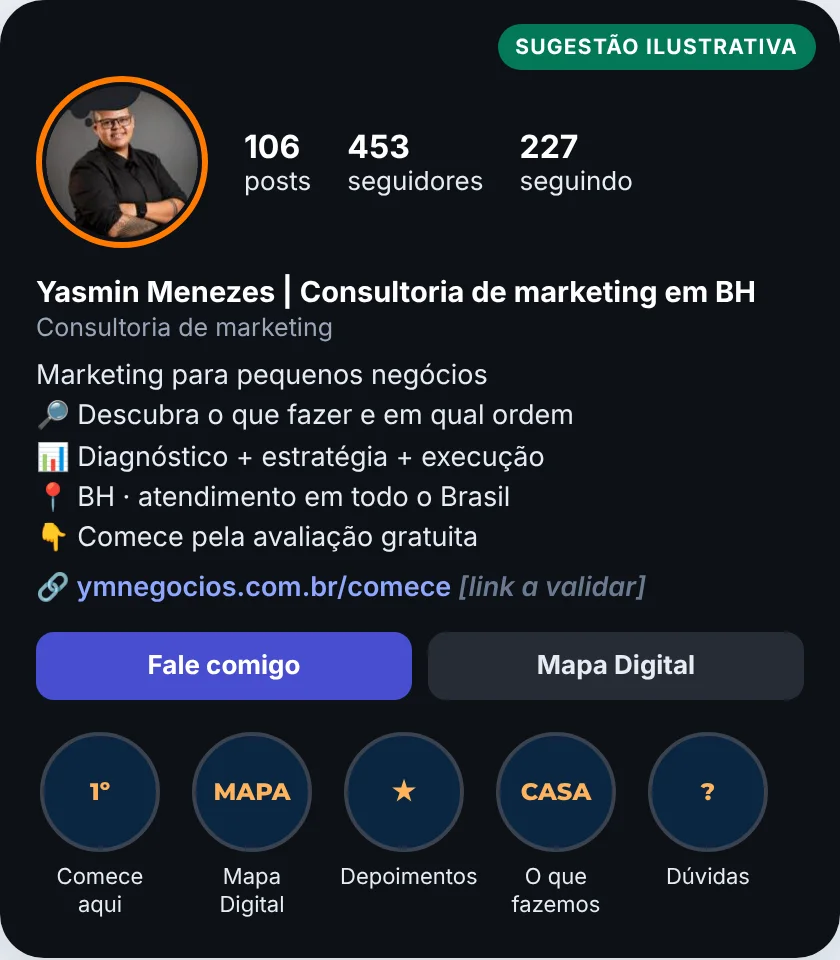
Cards com título curto, rosto da Yasmin e cores da marca; em novembro, uma sequência de Black Friday com checklist, WhatsApp e stories.
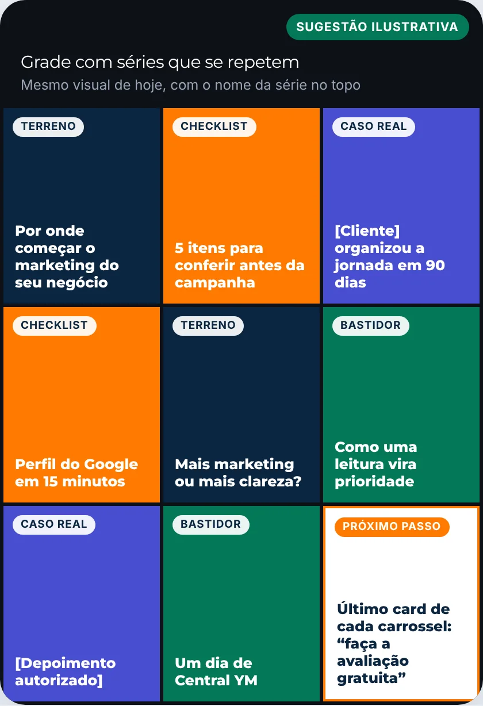
Título com a tese, subtítulo que explica o método e um botão laranja para a avaliação gratuita.
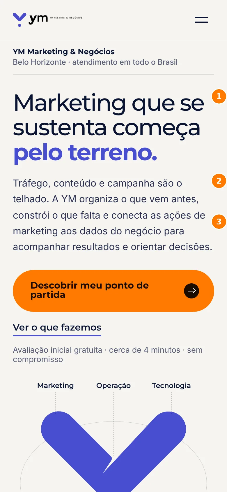
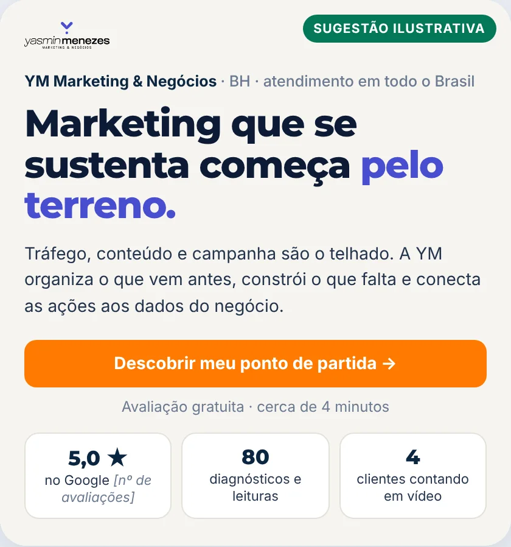
"Não sabe por onde começar? Comece pelo terreno", com três degraus de profundidade e uma regra de abatimento.
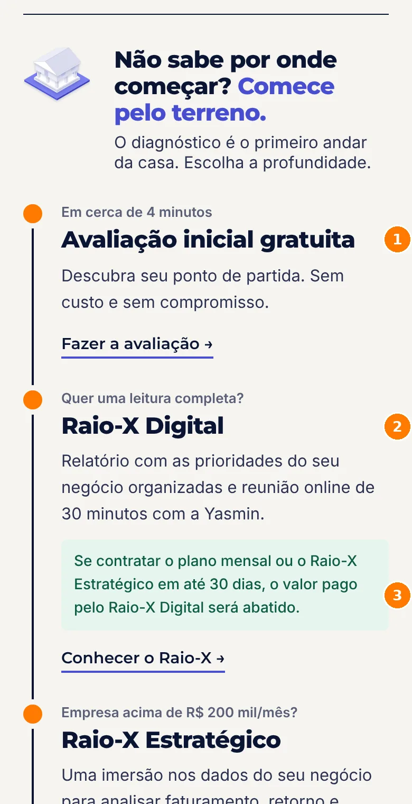
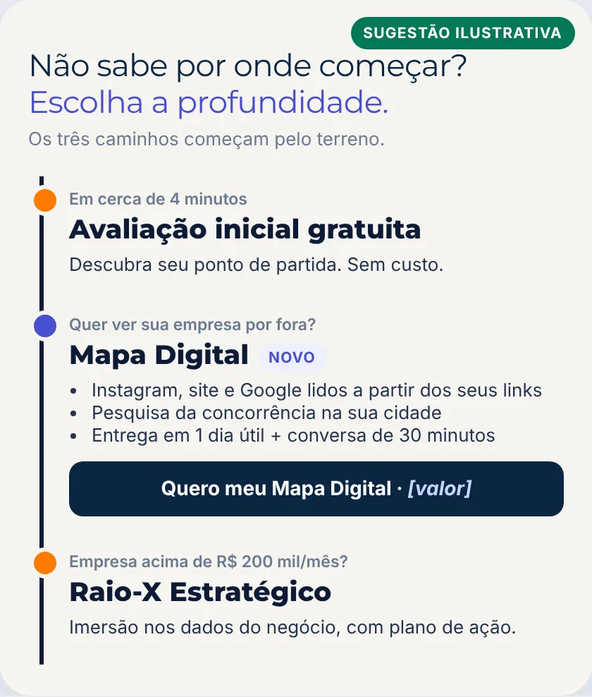
Quatro clientes, com nome e empresa, contam em vídeo como foi trabalhar com a YM, e há uma página com todos os depoimentos.
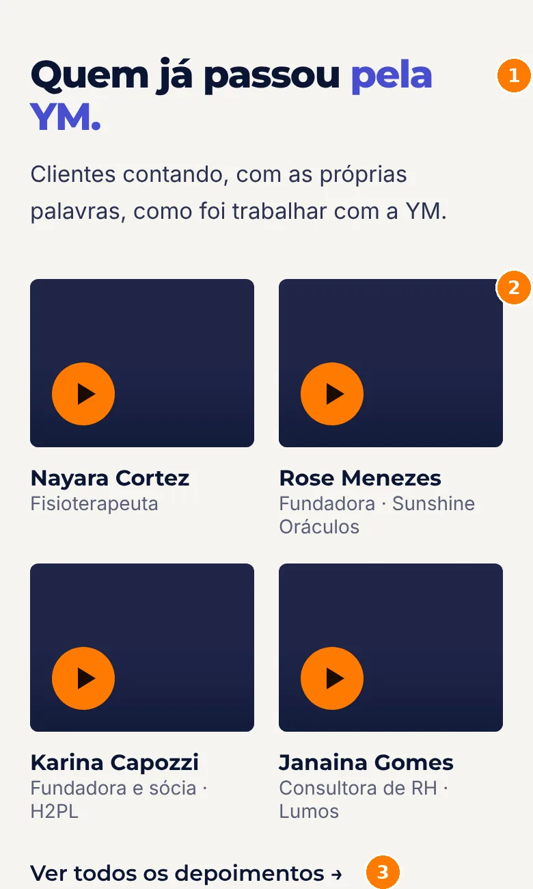
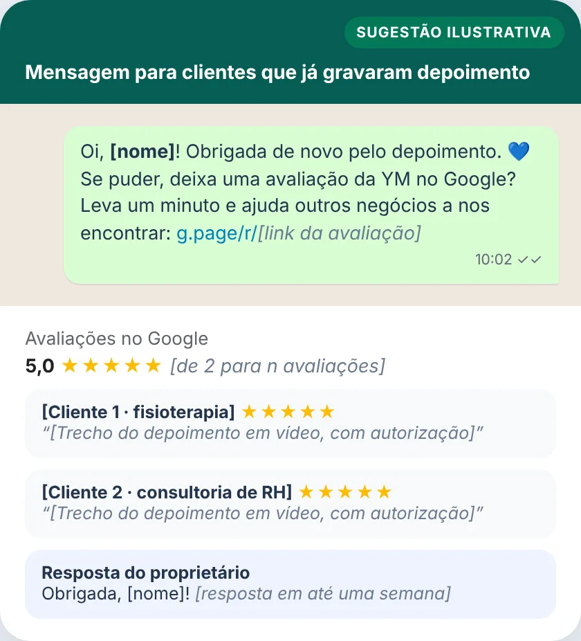
Consultamos o Instagram, o site e buscas públicas. Registramos também o que não encontramos: cada ausência aparece como oportunidade de criação, e pode indicar algo que existe e não alcançamos.
| Item | O que encontramos | Fonte | Leitura |
|---|---|---|---|
| @ym_marketingenegocios, verificado, com 106 posts, 453 seguidores e 227 seguindo. Bio com promessa em três linhas e link para o site. | Instagram (26/11/2026) | Ponto forte | |
| Destaques | Raio-X, Bastidores, O que fazemos, Depoimentos e Dúvidas, com capas no padrão da marca. | Instagram (26/11/2026) | Conferir |
| Posts | Série de Black Friday em novembro, com post quase diário; reel de 25/11 com 29 curtidas e 3 comentários. Amostra pequena; não analisamos alcance, que é métrica interna. | Instagram (26/11/2026) | Ponto forte |
| Site | ymnegocios.com.br: tese na primeira tela, Casa do Marketing, três formas de contratar com preço de entrada, Central YM, quatro projetos, quatro depoimentos em vídeo, sobre a fundadora e CNPJ no rodapé. | ymnegocios.com.br (26/11/2026) | Ponto forte |
| WhatsApp do site | wa.me/5531975073862, com o código do país. | Código da página (26/11/2026) | Ponto forte |
| Busca e medição | Título e descrição próprios, um título principal (H1), 25 imagens com texto alternativo e script de medição de visitas com aviso de cookies. | Código da página inicial (26/11/2026) | Ponto forte |
| Produto de entrada | O site apresenta o Raio-X Digital na seção "Como contratar" e no rodapé; o produto atual é o Mapa Digital. | ymnegocios.com.br (26/11/2026) | Conferir |
| Google, busca pelo nome | Site em primeiro, visão geral criada por IA fiel ao trabalho e Perfil da Empresa: 5,0, 2 avaliações, Consultoria em Marketing, 8 ou mais fotos. | Google (26/11/2026) | Ponto forte |
| Horário no Google | "Aberto 24 horas". | Google e Maps (26/11/2026) | Conferir |
| Google, busca pela categoria | Em "consultoria de marketing belo horizonte", a YM não apareceu no quadro de empresas nem nos resultados da primeira página. | Google (26/11/2026) | Oportunidade de criação |
| Google Maps | Na busca pelo nome, dois anúncios de agências aparecem antes do perfil da YM. | Google Maps (26/11/2026) | Possibilidade |
| Fotos e posts no Google | O Google avisa à administradora que as últimas fotos são de 195 dias atrás e sugere completar o perfil. | Google, visão de administradora (26/11/2026) | Possibilidade |
| Reclame Aqui e imprensa | Não localizamos página própria nem menções na imprensa nas buscas feitas. | Buscas públicas (26/11/2026) | Oportunidade de criação |
Primeiro, o que vimos nas buscas de 26/11/2026 por consultoria e agência de marketing em Belo Horizonte. Depois, o que pesquisas dizem sobre como pequenos negócios usam o digital e leem avaliações. É uma leitura de vitrine: não sabemos o volume, os preços nem a carteira de ninguém.
| Empresa | No Google | Site e redes | Como se apresenta |
|---|---|---|---|
| Real Origami | No mapa: 4,9, com 103 avaliações | Site | Agência de marketing, mais de 10 anos, serviço de consultoria de estratégia de marketing. |
| Empatize | No mapa: 5,0, com 96 avaliações | Site | Agência de marketing digital em BH, mais de 10 anos, serviço de consultoria de marketing. |
| LD Agency | No mapa: 5,0, com 60 avaliações | Instagram com cerca de 3,5 mil seguidores | Assessoria de marketing em BH, mais de 5 anos, consultoria de estratégia. |
| INGAGE | Anúncio: 4,5, com 36 avaliações | Site | Agência de marketing digital, parceira de plataforma de automação. |
| GAM SEO | Anúncio no Maps: 5,0, com 28 avaliações | Não verificado | Agência de SEO em BH. |
| Cybersell | Anúncio: 5,0, com 5 avaliações | Site | Agência de marketing digital e redes sociais, mais de 3 anos. |
| Nautilos | Resultado da web | Site | "Consultoria de marketing digital" com marca, comunicação e vendas. |
| YM Marketing & Negócios | Perfil: 5,0, com 2 avaliações; não apareceu na busca pela categoria | Site e Instagram com 453 seguidores | Consultoria de marketing e negócios, Método VOS, Casa do Marketing, sistemas próprios. |
Dezenas de avaliações, serviços cadastrados e anúncios que aparecem até na busca pelo nome de outra empresa.
YM: a ampliarPerfis de agência com milhares de seguidores e portfólio. A YM se diferencia pelo rosto da fundadora e pelo método.
YM: já existeDiagnóstico, plano de 90 dias e "contrato sem fidelidade" aparecem em anúncios de concorrentes nacionais.
YM: avaliação e Mapa Digitaldos pequenos negócios citam o Instagram entre os canais digitais que usam para vender; o WhatsApp chega a 81% (Sebrae, Pulso dos Pequenos Negócios, fim de 2024).
dos pequenos negócios já pagaram por propaganda em redes sociais ou na internet, na mesma pesquisa do Sebrae.
dos pequenos negócios que vendem online concentram a operação digital em uma só pessoa; entre os MEI, 76% (Sebrae e E-Commerce Brasil, 2026, 3.081 empresários).
dos consumidores dizem nunca ler avaliações de empresas online, e 74% usam dois ou mais sites de avaliação (BrightLocal, 2025, EUA).
Para a YM, isso aponta três mensagens: o dono que faz tudo sozinho precisa saber "o que fazer e em qual ordem" (a tese de vocês), a prova precisa estar onde ele confere (Google), e o primeiro passo precisa caber no tempo dele (avaliação de 4 minutos e Mapa Digital). A YM já tem as três; o passo é deixá-las visíveis no mesmo lugar.
Na varredura, alguns dados não apareceram. Isso não indica problema: é espaço livre, e cada item vira um ativo que trabalha para a YM todos os dias.
Não localizado: a YM em "consultoria de marketing belo horizonte". Criar: perfil completo, serviços e avaliações, e uma página do site para essa busca.
Não localizado: os depoimentos do site no Google. Criar: pedido com link direto aos clientes que já gravaram.
Não localizado: o Mapa Digital no site e nos destaques. Criar: uma página com o que entra, prazo e um exemplo.
Não localizado: atualizações recentes no perfil. Criar: um post por semana a partir da série do Instagram.
Não localizado: menções na imprensa e página no Reclame Aqui. Criar: pauta para a mídia local com os 80 diagnósticos e as leituras públicas.
Não localizado: pesquisa brasileira sobre como o pequeno negócio escolhe consultoria. Criar: um resumo anônimo das avaliações gratuitas, que vira conteúdo e pauta.
Se os caminhos de hoje já trazem os clientes que vocês querem, eles seguem. Se o objetivo for ampliar, estas camadas ajudam cada real investido a render.
Um exemplo de sequência, a ajustar na conversa de 30 minutos. O que já funciona entra como base.
A conversa de 30 minutos está incluída no Mapa Digital. Nela, escolhemos juntos o que vale, ou não, mudar.
Agendar a conversa de 30 minutos (incluída) WhatsApp (31) 97507-3862